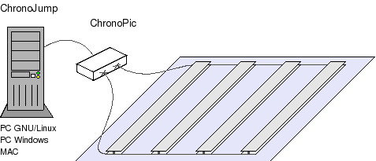
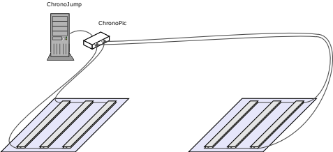

ChronoJump é um sistema completo multiplataforma para medir, comparação e estatística das fases temporais do salto.
Chronojump usa uma plataforma de contato com dos (na plataforma e fora dela) e de um circuito impresso (placa) cronometrador desenhado ah-doc para obter medidas precisas e fiáveis.O tempo de vôo de um salto é indicador da elevação do Centro de Gravidade do mesmo (sempre e quando a posição de saída e de chegada seja a mesma).

Esquema de software de administração (Chronojump) + cronômetro (Chonopic) + plataforma de contatos.
Chronojump pode ser usado também para a cronometrajem de corridas inclusive com intervalos e para a medição do tempo de reação (consultar Características).
